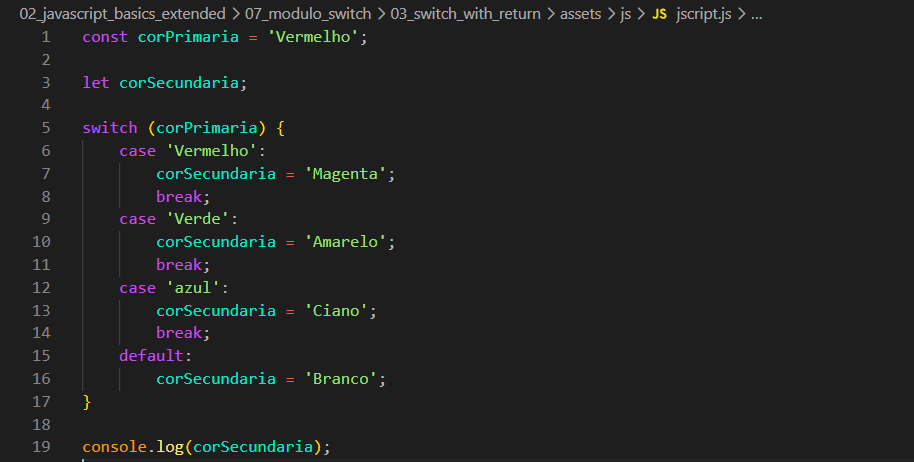
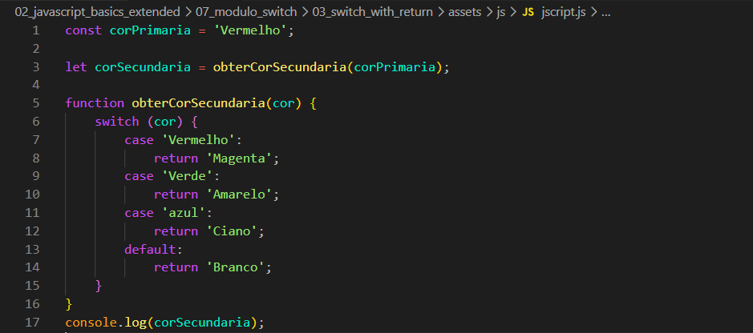

Switch With Return
Intro
Aqui iremos ter o seguinte codigo como exemplo dessa aula:

Aqui iremos ter o seguinte codigo como exemplo dessa aula:

Podemos observar que temos a corPrimaria = 'Vermelho' e depois temos um swich case onde iremos avaliar nossa variavel corPrimaria, e dependendo de nossa corPrimaria iremos atribuir um valor a nossa variavel corSecundaria.
Agora temos que imaginar que queremos reutilizar esse codigo diversas vezes, para fazermos isso sabemos que precisamos de uma funcao e podemos fazer da seguinte forma:

Podemos observar que houveram algumas mudancas em nosso switch uma delas sendo a remocao de break, isso pois com o papel do return, assim que o valor e retornado com o return, ele para de verificar as demais opcoes como o break.
Outra mudanca que tambem temos foi remover a variavel corSecundaria e adicionar o return pois com isso ele ira ira fazer o retorno doque desejamos.